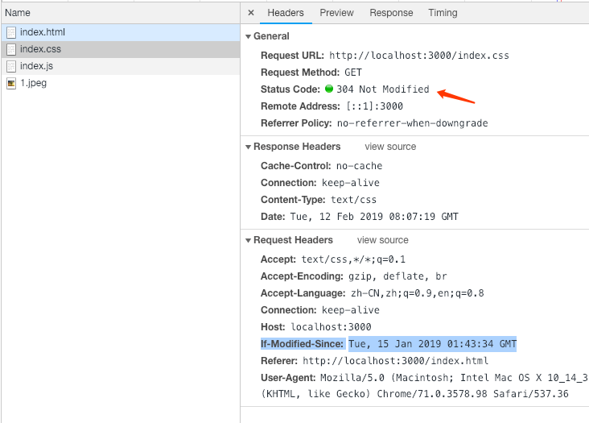
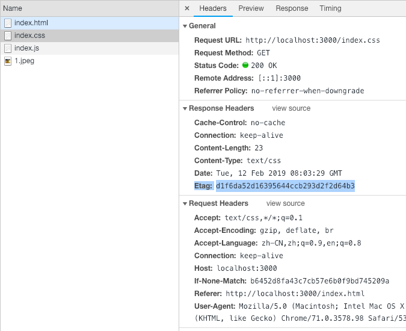

总结了 HTTP 缓存机制，为了加深理解，用 Node 实践了 HTTP 缓存。
本文demo地址: https://github.com/seasonrui/demo-for-blog/tree/master/node-cache-practice
缓存优先级：
- service worker
- memory cache
- disk cache
- 网络请求
浏览器会一级级从上到下找，直到找到为止。
service worker
Service workers 本质上充当Web应用程序与浏览器之间的代理服务器，也可以在网络可用时作为浏览器和网络间的代理。它们旨在（除其他之外）使得能够创建有效的离线体验，拦截网络请求并基于网络是否可用以及更新的资源是否驻留在服务器上来采取适当的动作。他们还允许访问推送通知和后台同步API。
memory cache
内存中的缓存，几乎所有请求都会浏览器自动加入 memory cache 中，是浏览器自身的机制，不受开发者控制。关闭 tab 页即失效。
disk cache
存储在硬盘上的缓存，是持久存储的。会根据 http 头信息来判断哪些资源是可以缓存的。平时说的强制缓存，协商缓存都是此类缓存。
强制缓存
利用 http 响应头中的 Expires 和 Cache-Control 两个字段来控制，表示资源的缓存时间。
Expires
是 HTTP/1.0 的规范，表示的是绝对时间，值是一个GMT格式的时间字符串。例如：1
Expires: Fri Jan 11 2019 14:03:22 GMT
告诉浏览器，在这个时间之前，都不需要再次请求。
因为是绝对时间，所以如果客户端和服务器时间不一致，会导致浏览器判断缓存失效。
Cache-Control
是 HTTP/1.1 的规范，表示的是相对时间，常用值如下：
- max-age：表示相对有效时间，主要就是根据这个字段来判断时间。
- no-cache：不使用本地缓存，使用协商缓存，主要目的是为了防止从缓存中读取过期资源。
- no-store：真正意义上的”不走缓存”，禁止浏览器及任何中间件缓存资源。
- public：可以被浏览器，CDN 等缓存。
- private：只能被用户终端浏览器缓存，不允许 CDN 等服务器对其缓存。
Expires 可以和 Cache-Control 一起使用，Cache-Control 优先级更高。
例子1: max-age
一个简单的index.html页面，引入index.css。设置Cache-control: max-age=120，缓存两分钟。
- 第一次请求
正常走网络请求。 - 刷新当前页面
看到请求 from memory cache，因为浏览器自动将请求加入到memory cache中，耗时0ms。 - 关闭当前 tab，打开新的 tab 页。
因为关闭 tab，memory cache 清空。接着去看 disk cache，因为设置了强制缓存2分钟，所以会看到 from disk cache，耗时比memory cache多。
当设置 max-age 为 0 时，每次都会重新请求。
例子2: no-cache
服务器设置响应为 Cache-Control: no-cache。
index.html 页面引入多个资源，相同的资源都引入两次。1
2
3
4
5
6
7
8
9
10
11
12
13
14
15
16
17
18
19
20
21
22<!DOCTYPE html>
<html>
<head>
<meta charset="utf-8">
<link rel="icon" href="data:;base64,=">
<script src="./index.js"></script>
<script src="./index.js"></script>
<link rel="stylesheet" href="./index.css"/>
<link rel="stylesheet" href="./index.css"/>
</head>
<body>
<img src="./1.jpeg">
<img src="./1.jpeg">
<script>
setTimeout(function () {
let img = document.createElement('img')
img.src = './1.jpeg'
document.body.appendChild(img)
}, 1000)
</script>
</body>
</html>
发现同步请求和异步请求都只请求了一次，也就是说no-cache不会影响本次请求的缓存，只是说下次请求需要协商缓存，本次如果有多个浏览器还是会缓存。
max-age=0和no-cache在浏览器实现上看基本一样，但是max-age为0表示的是到期需要重新验证，而no-cache表示每次必须向服务端验证。
例子3: no-store
服务器设置响应为Cache-Control: no-store
代码同 no-cache 一样，发现不管同步还是异步请求每个请求都不缓存，
协商缓存（对比缓存）
当强制缓存失效，就需要使用对比缓存，由服务器判断缓存资源是否可用，浏览器与服务器通过特定的标识来判断，分别是以下两组字段（成对出现）：
Last-Modified & If-Modified-Since
浏览器第一次请求时，服务器返回的 header 中加上 Last-Modified，表示资源最后一次修改时间。
当浏览器再次请求时，请求头中会带上 If-Modify-Since，值是第一次请求返回的 Last-Modified 值，服务器收到请求会，会根据此字段进行比对，如果相等，表示未修改，返回304；反之，返回200状态码，并且返回数据。
缺点是：
- 如果文件被服务器动态修改，但是内容并没有修改，此时因为文件的更新时间是最新的，所以缓存起不到作用。
- If-Modified-Since能检测到的粒度是s级的，如果资源更新时间是秒以下的单位，则不起作用。
例子4: Last-Modified
服务器设置Cache-Control: no-cache，响应头带上Last-Modified。
第一次请求。
第二次请求会带上If-Modified-Since，值为第一次请求返回的Last-Modified值，服务器对比两次时间，如果相等就返回304，不一致就返回内容和Last-Modified。

打开新标签页，还是会携带If-Modified-Since进行判断。
ETag & If-None-Match
为了解决上述问题，出现了新的字段 ETag & If-None-Match。
ETag 存储的是文件唯一标识，判断流程与 Last-Modified 一样。Last-Modified 可以和 ETag 一起使用，ETag 优先级更高。
例子5：Etag
同 Last-Modified 过程一样，区别是 Last-Modified 值是精确到秒的时间。Etag 是文件的唯一标识。
修改一个js文件，刷新页面会发现返回200。并带上新的Etag信息以便下次请求时更新用。

以上就是所有的缓存机制，但如果什么都没设置呢，浏览器会怎么处理？
对于这种情况，浏览器会采用一个启发式的算法，通常会取响应头中的 Date 减去 Last-Modified 值的 10% 作为缓存时间。
刷新
URL回车：正常请求，查看 disk cache 中是否有匹配，没有则直接请求。
普通刷新：（F5) (Command + R): 当前 tab 没关闭，所以 memory cache 是可用的。会忽略 Expires/Cache-Control 的设置，向服务器发送请求，Last-Modified/Etag 还是有效的。
强制刷新：(Ctrl + F5) (Command + Shift + R)：请求头会自动带上Cache-Control: no-cache，表示浏览器不使用缓存，服务器返回 200 和最新内容。
使用场景
频繁变动的资源
对于频繁变动的资源，就需要使用协商缓存了，也就是需要设置响应头 Cache-Control：no-cache，配合 Etag 或 Last-modified，每次都从服务器验证。
不经常变化的资源
通常设置 Cache-control 的 max-age 为较大的值，缓存时间长点，为了解决更新的问题，对文件名上进行 hash 处理。这样在更新的时候，HTML引入的文件名更新，之前的缓存失效。